Any business that develops a long relationship with their customers can and should automate feedback and review requests.
Good candidates include virtually any service business:
- IT outsourcing
- marketing agencies :)
- construction contractors
- hotels
- cleaning services
- software as a service
Basically, any business where you know the customer well enough to get their email.
Why would you want to automate feedback and reviews?
- You want feedback because you want to improve your business.
- You want online reviews because they strongly influence new business.
Automating feedback makes it consistent—automation doesn’t forget or get too busy. And by virtue of being consistent, the feedback becomes more useful as a key perfomance indicator letting you ask questions of the data.
- Are we doing better now than a year ago?
- Which departments are doing best?
- Which ones need help?
What we’re going to do is set up something called a Net Promoter Score (NPS) survey to start with. You can learn more about NPS surveys here.
Chaining your review process to your feedback process lets you filter your review requests before you make them. This lets you ask happy customers for reviews while dealing with unhappy ones through other channels (or at least learn from past mistakes to do better next time).
We want happy customers to share their experiences with the world. And emailing them a little nudge will help them cut out the many other distractions and get the review done.
The entire process in order of execution is as follows.
- Send feedback request from CRM and encode the recipient’s email address in the email so they can be identified later.
- Collect feedback in Typeform form.
- Send internal notifications from Typeform for unhappy customers.
- Trigger Zapier integration for happy customers to automatically send a follow-up review request from MailChimp.
- Trigger Zapier integration to return Typeform feedback to CRM for reporting purposes.
We can’t set things up in this order because we need to know where to point the email in step one and we need to create fields in Typeform, MailChimp and CRM before we can connect them with Zapier.
Create Feedback Form - Typeform
We’re going to use a service called Typeform in our examples because it creates beautiful forms, calculates your net promoter score for you, integrates widely so it can fit into our app constellation, and you can do a bunch of other cool stuff with it.
If you are already using a landing page tool like Unbounce or marketing automation platform like Hubspot or Marketo, feel free to create your feedback forms there. Or use Typeform anyway because it is awesome.
Hit the Create a Typeform and be sure to Save Your Account.
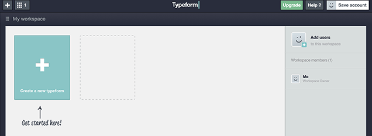
Then, with your account saved, select the Use a template option.
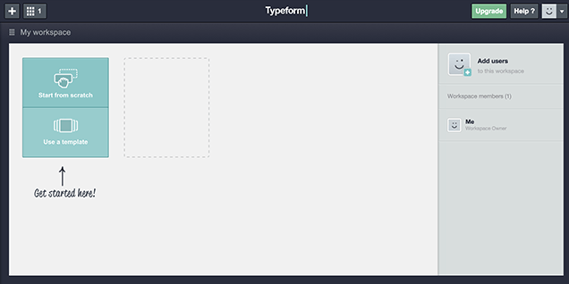
Scroll down the templates gallery and select Net Promoter Score and then Use this template.
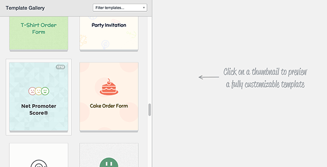
Typeform’s default net promoter score survey adds a bunch of demographic questions to the standard NPS survey.
While this information is undoubtedly useful to have, the beauty of NPS is simplicity. The main value comes from the first question which asks how likely the customer is to recommend you to a friend can be completed in ten seconds.
The second question asks, what was the reason for giving you a score. The extra effort required here makes the answers you get more valuable because whatever they write in this question is important enough that they care to take the time to tell you.
Consider the demographics questions optional. I feel segmenting the data by things like the service given to be more valuable than demographics. Keep or delete the demographics questions as you feel appropriate
Once you’ve decided what fields that you’re going to need, you will want to add a hidden email field to the form.
Select Hidden fields on, this will require an upgrade to Pro but you can start a free trial and follow along if you prefer.
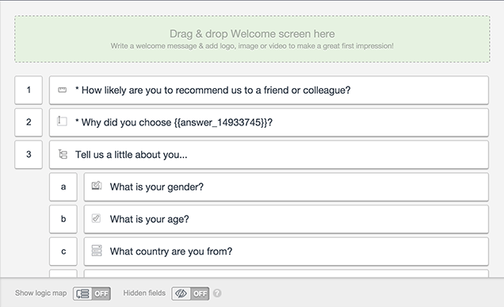
In the Hidden fields dialog, type email and hit save. This will let us pass the email address from your CRM/project management system/booking management system to Typeform and tie responses back to the individual who filled out the survey.
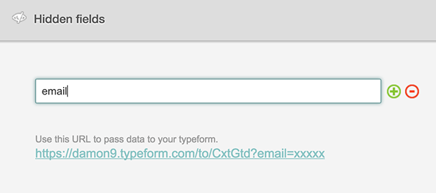
Make whichever design changes you like.
Set Up Internal Notifications
With the design set up, you can now set up an internal notification.
Under Typeform -> Configure, select Self notifications.

Under Send a notification to: enter the recipient(s) for the notifications. The email that you used to sign up will be there by default.
In Reply to: select the hidden email field that you added. This will let you reply to notifications and easily follow up with anyone who needs extra attention.
You can leave everything else blank.
Note that the Pro Trial lets you set all of this up, but it won’t work until you have a paid Pro account.
Detour: Test the Form
It’s always a good idea to test any automation you set up on yourself first, but with Typeform it is necessary that you have some data entered or else the integrations later won’t see the data fields.
Go to the Distribute section of your new form and copy the URL for your form.

Paste the URL in your browser and add your email address in place of the xxxx.
For me, this URL
https://caretjuice.typeform.com/to/CxtGtd?email=xxxx
becomes this URL
https://caretjuice.typeform.com/to/CxtGtd?email=damon@caretjuice.com.
Load the page and fill out the form.
Trial accounts can test the form—just not use it with real customers.
Set Up Online Review Request
Typeform lets you add a few popular Zapier integrations during the Configure step. But we’re going to switch to using Zapier because it gives us more options.
Create or log in to your Zapier account and select Make a Zap.
Choose Typeform and New Entry as your trigger and MailChimp (or whichever tool you use for email) and New Subscriber as your action.
Scroll down and connect your Typeform account to Zapier.
The main step here is to find your Typeform API key and copy and paste it into Zapier. Once you know how to copy and paste an API key, you’ll be an integration pro (I told you that you won’t need to learn programming).
Switch to Typeform (it’s probably best to have each application open in a different tab or window).
To find your Typeform API key, select My Account from the drop down and scroll down to the Your API Key section. Copy and paste that long string of nonsense in to Zapier and hit Continue.

Now log in to MailChimp, or whatever email program that you use, select Lists and Create List.
Name this list Promoters. In net promoter score surveys, people who give you a score of nine or ten are called promoters while sevens and eights are Neutrals and zero to sixes are Detractors.
Here’s what I entered so you can get an idea of what to write.

Now, go back to Zapier and connect your Zapier account to MailChimp.
You will get a popup asking you to sign in to your MailChimp account.
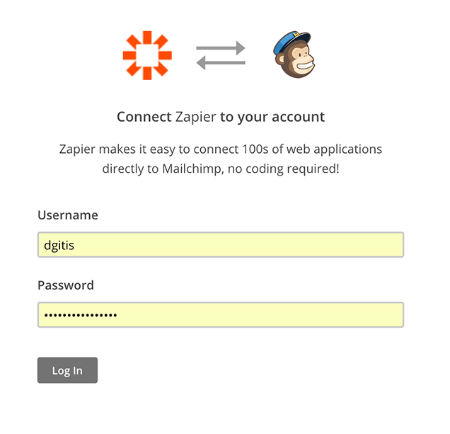
Log in and then select Continue.
Select the Typeform form that you used for the Net Promoter Score survey and Add a custom filter using the How Likely Are You to Recommend Us to a Friend as the field and Number Greater Than and 9 as the filter.
Your results should look something like this.

When you are comfortable with this, click Continue to set up the MailChimp end of the integration.
Your list will be Promoters.
Email will be the Typeform Email field.
And everything else can be left as is.
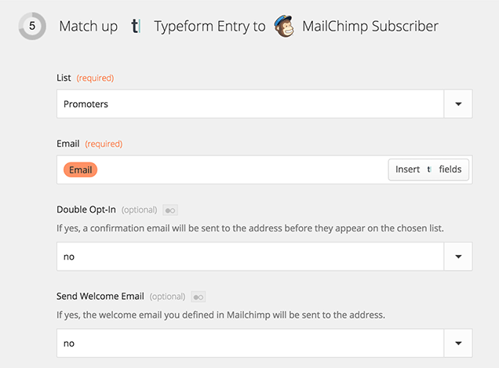
Scroll down and hit Continue and then proceed to Test the Zap.
When the test is done, name the Zap NPS Promoters and turn it on.
Send Review Request
Now we’re going to move back to MailChimp and ask for the review.
You need to be signed up to a paid MailChimp account to complete this step.
If you are only using MailChimp for one-to-one automation like this, then their pay-as-you-go options are probably most economical. If you are also using MailChimp for newsletters to a big list of subscribers, then the monthly options may be more suitable.
Let’s get to work.
While logged in to MailChimp, select Automation and Create Automation Workflow.
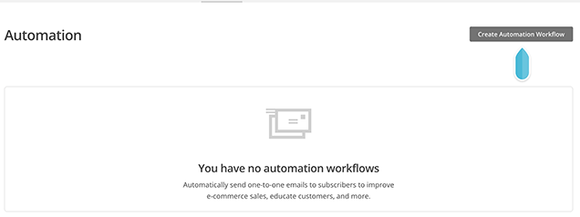
In the Choose a list to get started dropdown, select Promoters.
And then under Select a workflow, choose either Welcome Message or Welcome Series.
Welcome Message is for just a single email which is all you need if you’re just asking for a review. If you want to follow up with another message asking them to sign up for your newsletter or follow you on social media, then choose Welcome Series.

In the next screen, give your workflow a name and set up the sender.
You can see what I used in the screenshot.
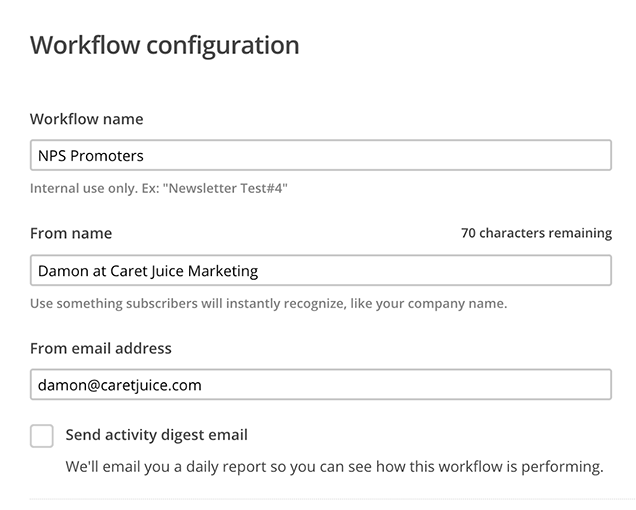
Otherwise, all of the default settings are fine. I added Google Analytics link tracking, but it’s not really needed since we are sending the visitors to other sites to review us. However, if you are doing a Welcome Series and will link back to your site, then you probably want to enable this.
Click Save And Exit at the top-right corner and select Automation to move to the next step.
Your automation is configured, but now you need to add an email message.
In the MailChimp Automation list under NPS Promoters click on the 0 emails link and select Add Email.
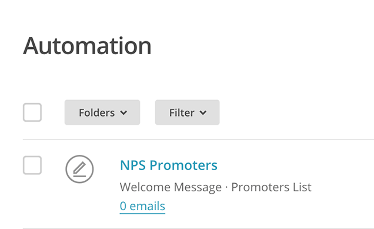
Email Contents
We’re not going to go over every step of creating the email here, but there are a few things that you should know before going ahead.
Obey the Law
The big one is that if you offer any payment or incentive, then the reviews will be considered paid reviews in many jurisdictions and that can put the request under truth in advertising laws.
That’s best avoided, so don’t offer anything for a review without getting legal advice (which this is not).
Where to Get Reviewed
The next important detail is choosing which sites that you want them to review you on and there are two things to consider here.
First, which sites are important. The way to do this is search Google and Bing using a query that you rank for or would like to rank for and see which review sites are already ranking. If a review site ranks well, then it is probably worth getting reviews on that site.
If you ran a hotel in downtown Halifax, then something like Downtown Halifax Hotels makes sense.
At the time of writing, Google is showing sites with Google Maps reviews, Trip Advisor and Expedia so those are probably good candidates.

The other thing to consider is whether asking for reviews is against each sites terms of service.
Some sites encourage you to ask your customers to review you while it can cause problems on other sites. Read Asking for Reviews: Is it Against the Site’s TOS to learn which sites encourage you to ask for reviews, which sites discourage you and what you can do instead.
As for the contents of the email, the main thing is to not get carried away and give them too many options. Listing out eight potential review sites maximizes the chances that the recipient will be a member of one site, but long lists are intimidating and giving too many choices typically reduces response rates.
I wouldn’t give more than two options.
Asking for a Google review just got a bit more tricky. If you want to include Google, and there’s a good chance that you do, then check out this post on Asking for Google Reviews.
Finally, the last thing to consider is your email design. In particular, should you do a fancy HTML email or just go with plain text.
For one-to-one emails like this, I tend to prefer plain text. It’s easier and it feels like it should be more personalized even though it is automated.
Highly designed emails immediately put recipients on guard. I have another post on HTML vs plain text emails that goes deeper in to the subject if you need more convincing.
As far as the contents of the email go, it’s best to keep it simple and to the point.
Subject: Thanks for Your Feedback
Hi,
I just wanted to thank you for your feedback and invite you to share your experience working with us with others.
I’d really appreciate us if you left a review on Trip Advisor, Google Maps (you’ll need to click on the review button on the right), or any other place that you feel appropriate.
Thanks in advance.
Regards,
You
Starting the Automation
The best way to start the automation is in your CRM, project management system, or booking system presuming that they support some kind of triggered email.
The specifics of the trigger are unique to each product so we won’t go in deep.
Any system that can send email and where you marking projects as complete will work. You could trigger off of a change in customer or account status. You could even use Zapier with your accounting system to send when a final invoice gets paid.
Here’s the email I use.
Hi {{first_name}},
Now that we’ve finished some work for you, I wanted to ask you to give us a couple of minutes of feedback so that we can continue to get better at helping you.
I’d appreciate it if you filled out our two question survey. The first question will take all of 15 seconds and the second is optional.
Visit this page to complete the survey.
Thanks,
{{owner.name}}
The personalization tags (everything inside the curly braces) will change depending on where you are sending from.
The other important thing is to make sure you get the links right. In particular, make sure you include the email in the personalization tags.
For my Typeform-based NPS survey, the links look like this.
https://caretjuice.typeform.com/to/CxtGtd?email={{email}}
That last ?email={{email}} is important.
The first part, ?email=, is telling Typeform that we are passing the email variable that we told it to watch for when we were setting up the form.
The second part, {{email}}, is another personalization tag from my CRM telling the CRM to insert the email into this particular template. The exact format of the personalization tags varies by CRM, but curly braces are common.
Without the these two elements, the whole automation sequence breaks. This is one more reason why you want it to be as automated as possible; you can’t expect your employees to remember this all of the time if they’re sending manually.
If you were to trigger the automation from within the project management system, you’ll probably have to go through Zapier again and trigger the feedback email with the properly tagged link in a mail system like MailChimp possibly even combining that with CRM information pulled into MailChimp by Zapier.
The exact details of how to do it depend on the systems that you use, but hopefully by now you have some idea of how these can all work together .
Closing the (Optional) Loop
That’s the basic setup done.
But there’s one more thing that you might want to do and that is send your NPS survey results back to CRM so that you can run segmented NPS reports against things like different services or business divisions and see which teams are doing best and which areas of the business you need to focus on improving.
The first thing you will need to do is create fields to hold this data in your CRM.
You are going to need fields for the NPS Score (number field), NPS Comments (text field), and NPS Date (date field).
The date is really important because that is what will let you run reports on the score over the last quarter or year. If you were to use something like project completion date, you might run in to situations where you do several projects with a client who, for example, only fills out your first NPS survey but then contributes to your recent score.
With those three fields set up, fire up Zapier again and create a new Zap.
Link Typeform with a New Entry trigger to your CRM with an Update Contact action.

Go through the various connection steps (which will depend partly on your CRM) and then match the email from Typeform to your CRM email field to match your data to the right record.

And then connect your NPS data to the new fields in CRM.
(I ran in to a bug at this step where Zapier couldn’t detect the NPS fields that we’d created and initialized with the first test submission. I fixed the problem by submitting my Typeform a second time and redoing this integration.)
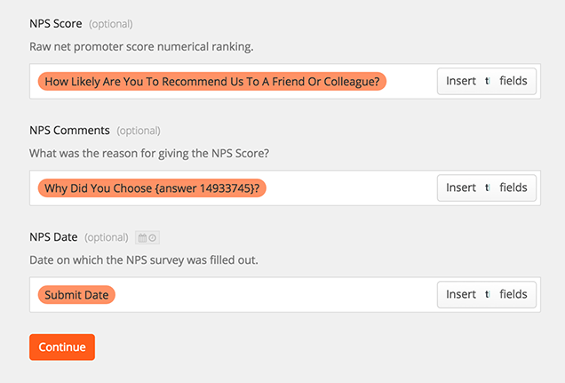
Test your integration, name it and you are done.
That was a long post, but it’s worth it. Now you are automatically asking your happiest customers for online reviews which will help you get more business while getting feedback that will help you analyze and improve your business.
Well done.